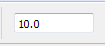
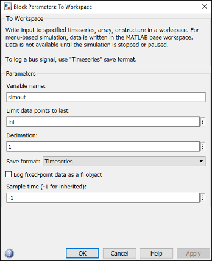
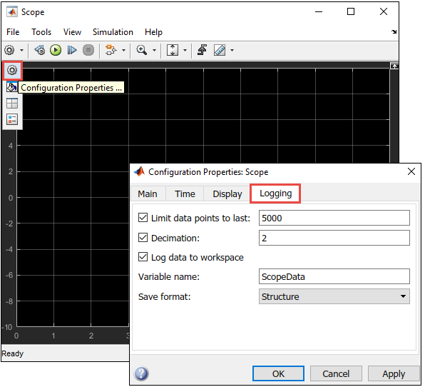
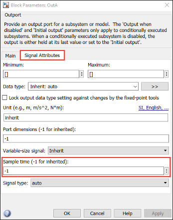
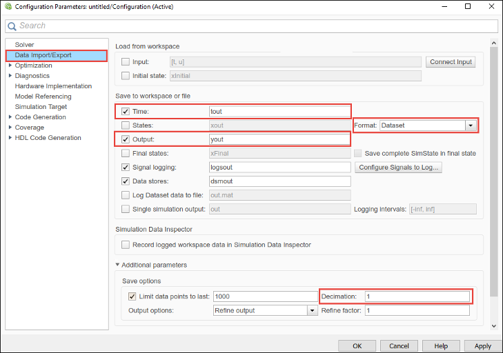

SD card logging is supported in models containing To Workspace, Scope, or Outport blocks. You must specify the values for several block parameters.
To configure a Simulink® model to run on the target hardware, perform these steps:
On the Simulink model toolbar,
set the Simulation stop time, located to the left of
Simulation mode. The signals are logged for the
time period specified in the Simulation stop time
parameter. The default value is 10.0 seconds. Enter
Inf to log signals indefinitely.

In the Simulink model, set the parameter values of To Workspace, Scope, and Outport blocks.
To set the parameter values of the To Workspace block:
Double-click the block, and specify these parameters in the Block Parameter dialog box.
| Parameter | Description |
|---|---|
| Variable name |
Specify a variable name for the logged data. |
| Limit data points to last |
Specify the number of data points to be logged in the MAT-file. The maximum number of data points that a MAT-file can contain is 512. |
| Decimation |
Use this parameter for the block to write data
points at every nth sample, where
n is the decimation factor. The
default decimation, For example, if you specify
Decimation as
|
| Save format |
Select a format of the variable to which you save
data. SD card logging supports only these three
formats:
|
| Sample time (–1 for inherited) |
Specify an interval at which the block reads data.
When you specify this parameter as
|

To set the parameter values of the Scope block:
Double-click the block, and click the Configuration Properties button.
In the Main tab, specify the Sample
time parameter. When you specify this parameter as
–1, the sample time is inherited from the driving
block.
In the Logging tab, set the block parameters listed in this table.
| Parameter | Description |
|---|---|
| Limit data points to last |
Specify the number of data points to be logged in the MAT-file. The maximum number of data points that a MAT-file can contain is 512. |
| Decimation |
Use this parameter for the block to write data points
at every nth sample, where
n is the decimation factor. The
default decimation, For example, if you specify
Decimation as
|
| Log data to workspace |
Select this parameter to enable data logging. When you select this parameter, the Variable name and Save format parameters become available. |
| Variable name |
Specify a variable name for the logged data. |
| Save format |
Select a format of the variable to which you save
data. SD card logging supports only these three formats:
|

To set the parameter values of the Outport block:
Double-click the block, select the Signal Attributes
tab, and specify the Sample time parameter. When you
specify this parameter as –1, the sample time is
inherited from the driving block.

In the model window, open the Configuration Parameters dialog box and select Data Import/Export.

Set the block parameters listed in this table:
| Parameter | Description |
|---|---|
| Time |
Saves time data to the specified variable. |
| Output |
Saves signal data to the specified variable. |
| Format |
Select a format of the variable to which you save
data. SD card logging supports only these three
formats:
|
| Limit data points to last |
Specify the number of data points to be logged in a MAT-file. The maximum number of data points that a MAT-file can contain is 512. |
| Decimation |
Use this parameter for the block to write data
points at every nth sample, where
n is the decimation factor. The
default decimation, For example, if you specify
Decimation as
|